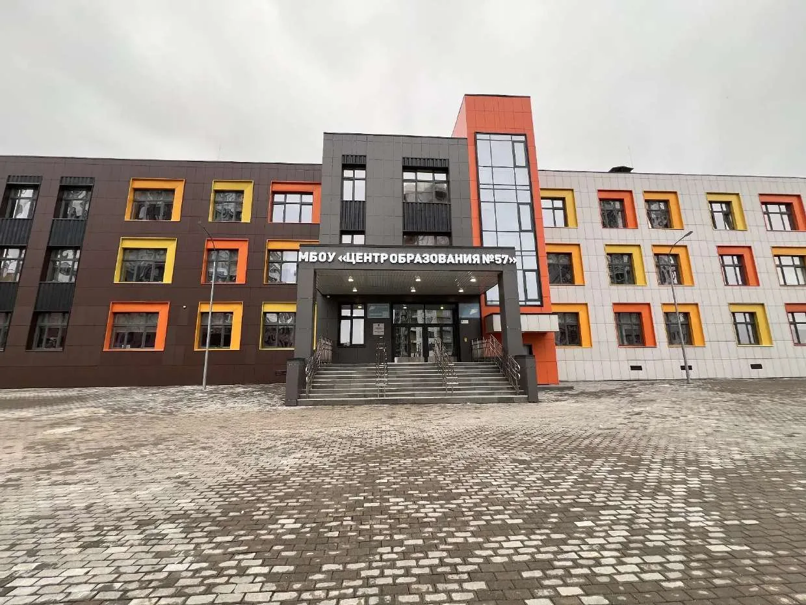
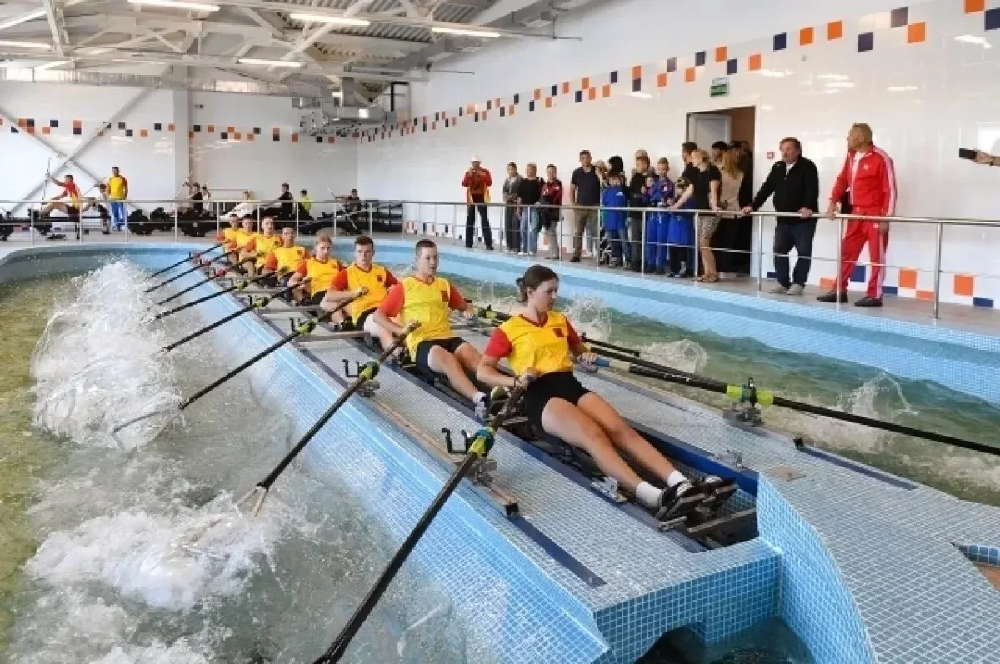
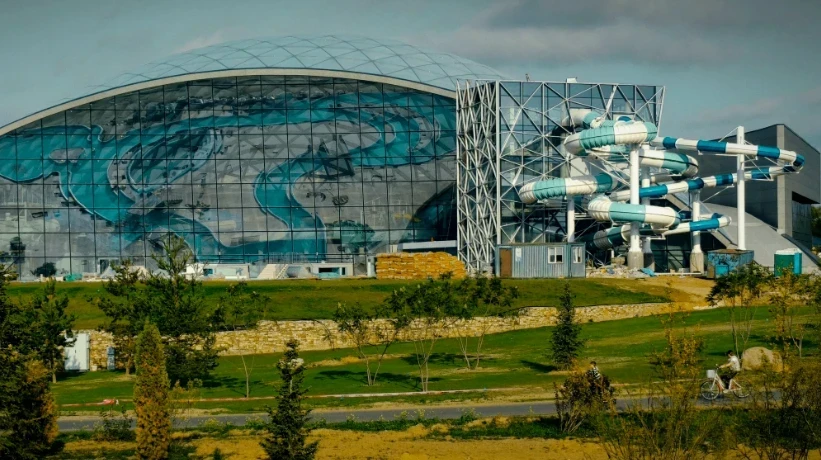
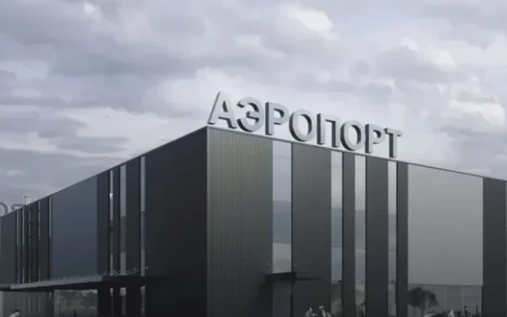
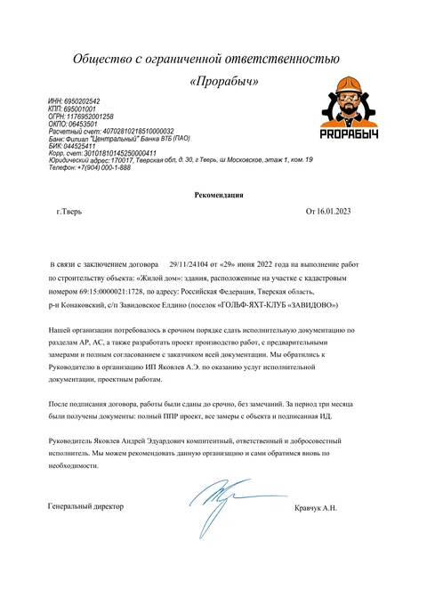
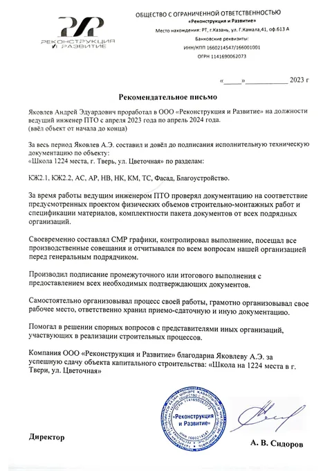

Знакомо?
Сдача
горит,
горит,
а документов нет
X-PTO
Берём на себя
01Исполнительная документация
02Сметы
03ППР и техкарты
На объекте
Геодезия, обмеры, защита объёмов
КС-2
КС-3
Поверенное оборудование
Итог
Доводим до ЗОС
ПРИНЯТО
без возвратов и замечаний
Удалённо по всей России

Школа · Тверь
Спортшкола · Тверь
Аквапарк · Завидово
Аэропорт · БалаковоПроверяемо
Член СРО проектировщиков
рег. № СРО-П-116-18012010


Оценка объёма и стоимости
1день
Опишите объект
Оставьте заявку
Ссылка в профиле
x-pto.ru
+7 (920) 685-13-77
Telegram @ptotver
Telegram @ptotver
X-PTO